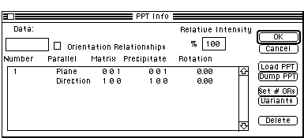
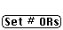
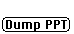

Distributed By: Virtual Labs
Precipitate Info Dialog Box
PATH...Parameter Menu:Define Orientations:Desired Precipitate

Precipitate Orientation Dialog Box
The Precipitate Info dialog box is the second dialog box under the Parameter
Menu. It is accessed by selecting one of the three choices found under
the Parameter Menu Hierarchical menu item
- This dialog box sets the orientation of each precipitate with respect
to the matrix crystal. Any number of O.R.s may be set for each precipitate
crystal.
- Desktop Microscopist defines an orientation relationship as a set
of four Miller indices, two indicators which determine whether each row
of Miller indices is either a plane or a direction and two rotation angles.
.i.Orientation Relationship;.i.Define Orientations:Orientation Relationship;
- The four Miller indices are divided into two subsets of indices. Each
subset of two indices has one index from the matrix and one index from the
respective precipitate. These planes or poles are set parallel by Desktop
Microscopist. Desktop Microscopist works by setting the first subset of
either planes or directions parallel and then setting the second subset
of planes or directions parallel. The only requirement is that the angular
relation between the matrix plane/direction subset is the same as the angular
relation between the precipitate plane/direction subset.
- In some instances, two crystals have an orientation relationship that
is not easily described by rational poles. A typical example would be the
relationship between a martensite grain and the original matrix. Desktop
Microscopist supports one method for setting this type of relationship:
- To set an irrational Orientation Relationship, first set the matrix/precipitate
.i.Orientation Relationship:irrational; closest to that desired. Next, two
rotations about the defined matrix axes are allowed. The rotations occur
in the order in which the relationship was defined. For example, if the
orientation relationship is defined as:.i.Irrational Orientation Rel.;
| Plane/Direction |
Matrix | Precipitate | Rotation |
|---|
| Plane |
011 | 0-11 |
| Direction | 100 | 011 |
Sample Orientation Relationship
The crystals will be oriented so that the (001)matrix is parallel to the
(011)ppt and the [001]matrix is parallel to the [011]ppt. The crystal will
then be rotated so that looking down the 001matrix g-vector the precipitate
crystal will be rotated 15° in a clockwise direction and subsequently
looking down the 010matrix g-vector the precipitate crystal will be rotated
5° in a counterclockwise direction.
This button is used to set the total number of orientation
relationships which are to be defined. It functions in a fashion similar
to the Set # Atoms button in the Crystal Definition Dialog Box.
This button may be used to eliminate unwanted orientation
relationships. It will delete the active (highlighted) orientation relationship.
andThese buttons serve the same
function as the Load and Dump options within the Crystal Definition dialog
Box. The dialog activated by these buttons is exactly the same as previously
described with the exception that the Matrix buttons will not work.
The Relative Intensity option is used to specify how strongly diffracting
the precipitate crystal is in comparison to the matrix. Values for the corresponding
editable text box will typically be between 0 and 100%. .i.Define Orientations:Relative
Intensity;
This button activates some relatively sophisticated
numerics. This button will cause Desktop Microscopist to attempt the determination
of all possible variants of the active orientation relationship. A variant
of a crystallographic orientation can be defined as another orientation
relationship which will generate the exact same set of diffraction patterns
as the original orientation relationship. However, when defined in tandem
these two or more relationships create a new set of diffraction patterns
which can be viewed as the sum of a set of the original diffraction patterns.
Variants are useful when looking at fine precipitates in a matrix where
it is difficult to achieve a single orientation relationship. The current
version of Desktop Microscopist may not provide a complete answer. However,
in most cases the variants will be correct and at the very least a reasonable
subset of the total possible variants will be provided..i.Define Orientations:Variants;
Author: J.ames T.
Stanley
 Desktop
Manual:Dialog Boxes
Desktop
Manual:Dialog Boxes
Distributed By: Virtual Labs
Last Updated:1/12/96 Sat, Apr 27, 1996